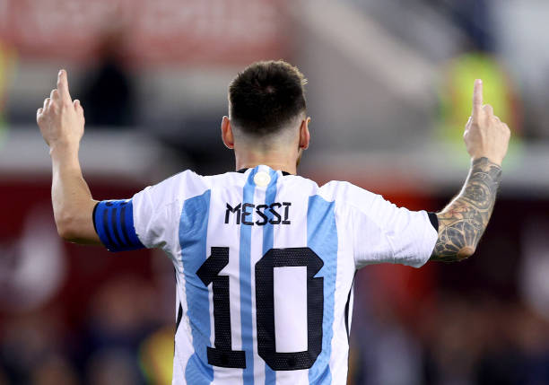
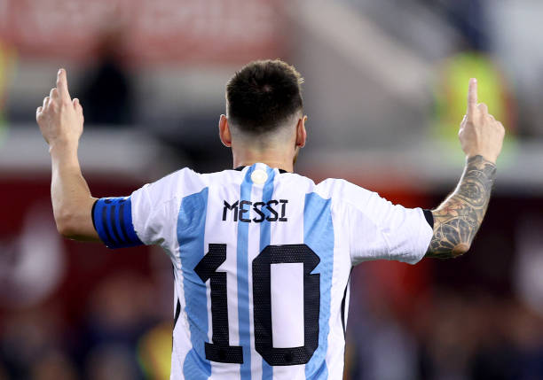

Lionel Messi
The Greatest Player of All Time
His ability to make hard things look easy is one of messi rare trait he posses
See more messi.com photos in our next gallery
His ability to make hard things look easy is one of messi rare trait he posses
See more messi.com photos in our next gallery
When the clock ticked over to bring in 2010 it was already clear that Lionel Messi and Cristiano Ronaldo were special talents. After finishing behind Kaká in voting for both the 2007 Ballon d’Or and the FIFA World Player of the Year, Cristiano Ronaldo won both awards in 2008 and Messi followed in 2009. But as outstanding as they already were a decade ago, few, if any might have predicted that the Messi-Ronaldo rivalry would still be going strong as 2020 approached. It wasn’t until Luka Modric won the Ballon d’Or and FIFA FIFPro awards in 2018 that someone broke through the duopoly. Then of course, Messi bounced back to pick up both awards just one year later.